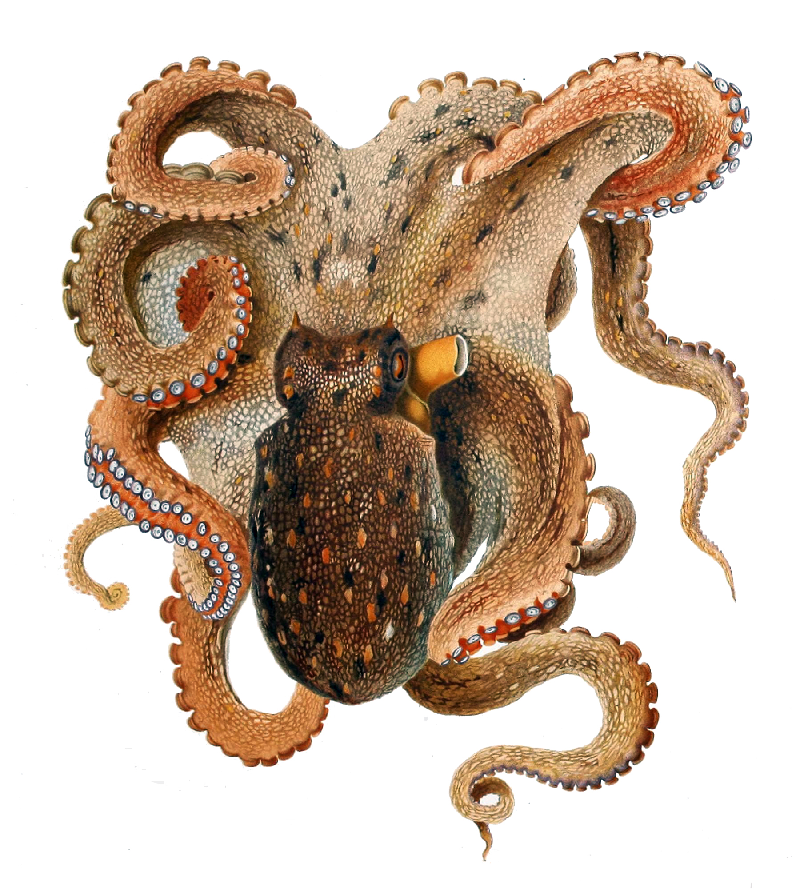

<meta charset="utf-8">
<title>w4u-main demo</title>
<script src="https://unpkg.com/vue"></script>
<script src="https://cdnjs.cloudflare.com/ajax/libs/webcomponentsjs/1.2.0/webcomponents-loader.js"></script>
<script src="http://cdnjs.cloudflare.com/ajax/libs/mathjax/2.3/MathJax.js?config=TeX-AMS-MML_HTMLorMML.js"></script>
<script src="../web-components/w4u-main/sync/w4u-main.js"></script>
<script src="../web-components/c4u-main/sync/c4u-main.js"></script>


<c4u-circuitry>

<w4u-stage>
 <w4u-sprite name="octopus">
  
  
  <w4u-drag name="move" />
 </w4u-sprite>
</w4u-stage>

<w4u-slider name="slider3" orient="horizontal" color="#0000FF"  continuous="true" min=-180 max=180></w4u-slider> 
<!--c4u-connection source="move-x" target="octopus-x"> </c4u-connection-->
<c4u-connection source="move-x" target="slider3-v"> </c4u-connection>
<!--c4u-connection source="move-y" target="octopus-y"> </c4u-connection-->


<br/>

</c4u-circuitry>


